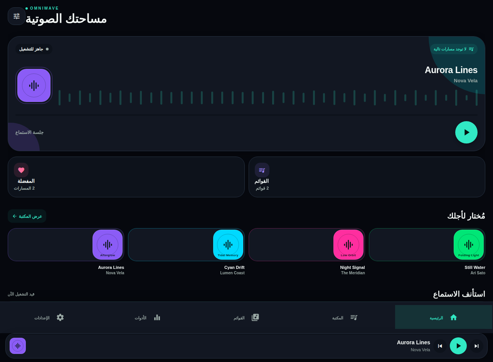

مكتبة شخصية
استيراد صوت وفيديو من الملفات أو مكتبة الجهاز بإذن صريح، مع تحقق وتجاوز التكرارات.
مشغّل وسائط محلي للهواتف يضع ملكية ملفات المستخدم، وضوح التحكم، والخصوصية الافتراضية في صلب تجربة الموسيقى والفيديو.

صُمم OmniWave لمستخدم يحتفظ بمكتبته على هاتفه ولا يريد أن يسلّمها لخدمة سحابية. لذلك تبقى المكتبة والتفضيلات والسجل على الجهاز، من دون حسابات أو إعلانات أو تحليلات خارجية.
استيراد صوت وفيديو من الملفات أو مكتبة الجهاز بإذن صريح، مع تحقق وتجاوز التكرارات.
مشغّل موسيقى كامل وطابور وقوائم تشغيل ومؤقت نوم، إضافة إلى VTT وسرعة وتشغيل فيديو بملء الشاشة.
أربع لغات وRTL وثيمات وحجم نص وتباين وحركة مخفضة وبدائل مرئية للإيماءات.
TypeScript + Vitest + Expo ESLint
تغطي عقود البيانات والواجهة والتوطين والتصدير وVTT، وتُشغّل في CI.
قيد التوثيق على الهاتف
الخلفية وشاشة القفل وBluetooth والتدوير وPiP والأذونات تحتاج نتائج iOS وAndroid حقيقية، ولا تُعرض هنا كأنها مكتملة.
تشرح دراسة الحالة مسار التصميم والهندسة: بنية محلية أولاً، مكتبة متحققة، تجربة وصول مخصصة، توسعة الفيديو، وحواجز الجودة والأمان.